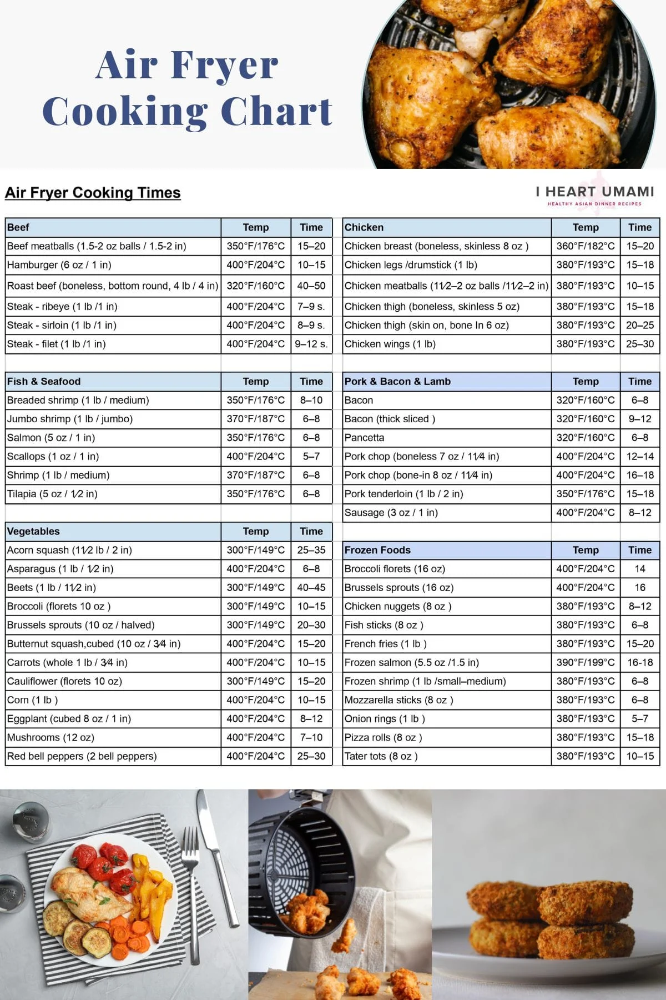
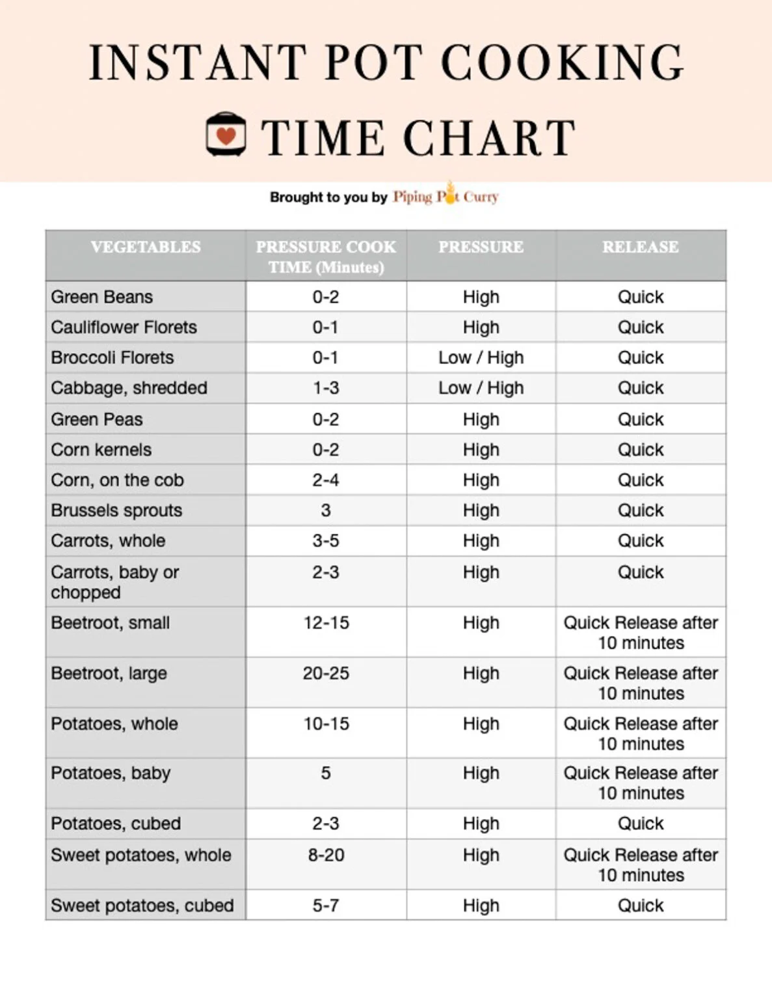

Introduction
The world of cooking may seem like a daunting task. However, with newer innovative kitchen appliances such as the notorious air fryer and instant pot, creating nutritious and flavorful dishes has become more accessible and efficient than ever before. These tools not only save time but also offer a myriad of health benefits by preserving nutrients and reducing the need for excessive oil.
Air frying uses a process of hot air circulation to achieve a crispy texture. By doing so, it cuts down on unhealthy fats and calories compared to traditional frying methods. Whether you want something like crispy chicken wings, delightful french fries, or roasted vegetables, the air fryer can provide all the flavor with a fraction of the oil.
Meanwhile, the instant pot has become a staple in modern homes for its ability to cook meals quickly under high pressure while retaining all the food's natural flavors and nutrients. From hearty stews and tender meats to perfectly cooked grains and vegetables, the instant pot offers a convenient option for those who want to eat healthily without spending hours in the kitchen.
Air Fryer

The air fryer is more than just a basic convenient kitchen gadget as it offers substantial health benefits through its reduced cooking time. It does this by preserving nutrients, lowering fat content, enhancing flavors, and minimizing harmful components. Making it easier to enjoy healthy, delicious meals.
Instant Pot

The instant pot is a powerful tool for enhancing the nutritional quality and health benefits of meals. By preserving nutrients, reducing the need for added fats and harmful components, and encouraging home cooking, the instant pot supports a healthier diet. This makes the instant pot a fantastic option if you're a kitchen novice as it makes it easy to prepare delicious, wholesome meals quickly and efficiently.